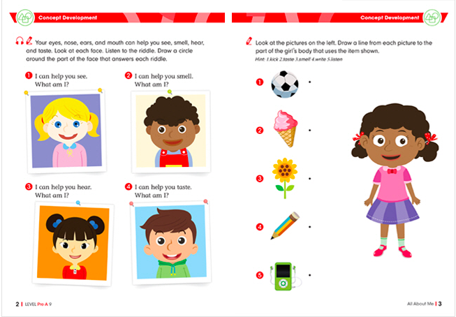
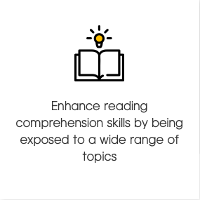

|
Eye Level Math helps students cover both basic skills as well as developing
advanced concept applications. Through Basic Thinking Math students establish
a strong understanding of the foundations of mathematics. (Units: Numbers, Arithmetic,
Application of Arithmetics, Equations, Relations, Relationships, and Functions). |
Each level emphasizes critical thinking through reasoning skills (comparing,
planning, hypothesizing, analyzing and critiquing). Establishing pattering, problem solving,
measurement and reasoning for advanced mathematical skills.
(Units: Patterns & Relationships, Measurement, Geometry, Reasoning, Problem Solving, Spatial Sense,
Relationships & Functions). By studying Eye Level Math, students can master basic arithmetic operations
and mathematical thinking, while developing greater concentration and increased self-confidance.
|
|  |
Eye Level English takes students from basic motor skills
needed for reading and writing, through the building blocks
or grammar, to more complex concepts. The program is aligned with the curriculum
standard for the English Language Arts established by the U.S. Department of Education.
Some concepts that are covered are phonemic awareness, in-depth comprehension strategies,
reading comprehension, academic & content vocabulary, syntax, fluency, etc.
|
Eye Level English helps kids go from foundational reading and writing skills
to more complex concepts that enhance critical thinking and written communication.
Some concepts that are covered are print concepts, sentence structure, phonics,
creative writing, fluency, academic vocabulary, basic writing structure, etc.
|
|  |
We provide our students with the 2012 Oxford IB Standard Level Textbook for Math. In addition, students
come with questions from school and our instructors will also collect challenging questions
to give to the students. Although a standard level textbook is given, we provide tuition and assistance for
both standard level and higher level students.
|